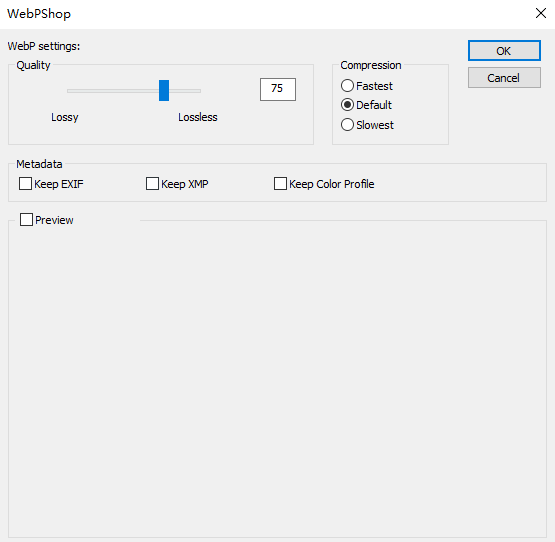
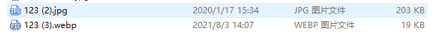

# PS2020 支持 webp 格式
# 一、适用于 Photoshop 的 WebP 文件格式插件
插件 github 链接: https://github.com/webmproject/WebPShop
插件支持：
- 打开并编辑 webp 格式文件
- 图片文件转换保存为 webp 格式，并设置压缩质量
- 支持 webp 动画的以上操作
# 二、使用
github 插件 md 有安装使用说明、以及限制、故障排除等说明。
这里简单记录下自己的使用过程。
我的电脑环境 windows64 位、Photoshop2020 已安装
安装插件
在 github 插件界面按照说明对应的系统点击安装
插件快捷下载👉win64
将下载的文件放置到 PS 安装路径下的 [Plug-ins] 文件夹下
打开编辑 webp 格式文件
启动 PS，文件 -> 打开 - 选择 webp 格式文件，或者直接将 webp 文件拖入 PS 窗口
图片文件转换保存为 webp 格式，并设置压缩质量
用 PS 打开普通的 jpg、png 图片，文件 -> 存储为 -> 文件类型选择 [WebPShop (*.WEBP;*.WEBP)]
点击保存，会弹出质量设置界面 -> 调节压缩质量，点击 ok 完成导出 webp
默认的存储质量为 70

# 三、比较

以上是默认为 70 的质量导出后对比情况。
真的是太棒了！
# 四、其他、批量转换 webp
webp 批量转换转换一直是用的一个静态网页，也是非常好用！